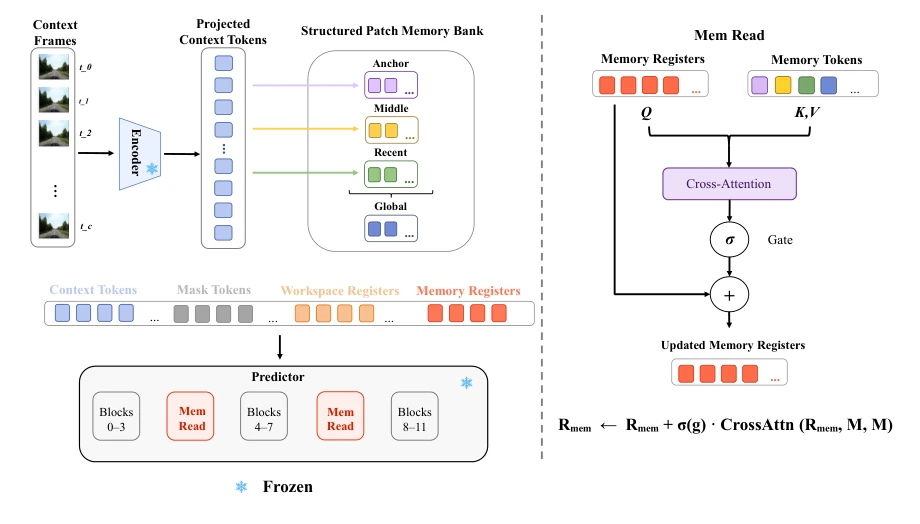
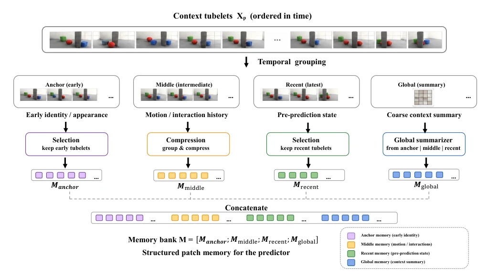

This paper adds a "memory offload" to the latent space world model V-JEPA 2, which is "only remembers the present". The authors keenly point out that existing models lose continuity when encountering occlusion, and physical common sense is instantly zeroed out, because the evidence relied upon for subsequent predictions is invisible in the current field of view. HERA did not touch the backbone, only inserted a 3 million parameter adapter, and managed to pull IntPhys2's accuracy from 52.57% to 54.35%. Although the improvement magnitude looks small, on hard metrics like physical consistency, especially fixed-viewpoint continuity tasks, it jumped directly by 11 points, indicating this "memory routing" is indeed more useful than simply stacking context. However, this mechanism essentially still relies on an external patch, not solving the fundamental defects of the model's internal representation; if switching to a more complex scenario, whether these 3M parameters can hold up is still questionable. Additionally, it relies on synthetic physical scenarios like IntPhys2, and generalization ability in the real world is doubtful. Overall, it is a pragmatic attempt to "patch" frozen models, but do not expect it to truly learn object permanence; it is more like opening a backdoor on the prediction path.
Ideal world models should possess "physical memory", meaning objects can maintain attributes, motion, and interaction relationships even after being occluded. But existing predictive video models (such as V-JEPA 2) mainly focus on visible content in the next frame, lacking persistent representation of invisible evidence. Existing methods for extending temporal reasoning have obvious deficiencies: extending the input window retains more observations, but early sparse evidence is drowned by recent tokens; generic feature caches retain history but cannot decide which evidence affects specific predictions; object-centric memory relies on unstable object decomposition and temporal associations in frozen features. As stated by Bardes et al. (2024, 2025), although V-JEPA 2 can encode physical laws, it has not established persistent representation of physical states. Therefore, the bottleneck is not whether historical evidence is retained, but whether relevant evidence can be selectively routed into the predictor without interfering with the pre-trained latent workspace. HERA aims to solve this routing problem, not merely storage, attempting to let the model still "remember" it after evidence disappears without introducing object annotations.
HERA is a historical evidence routing framework, instantiated as RRPM (Register-Routed Patch Memory). The overall process is: freeze V-JEPA 2's context encoder, target encoder, and predictor blocks, only training the adapter module. In terms of data flow, context tokens first enter the Structured Memory Bank, organized into memory tokens by time role. Subsequently, Memory Registers retrieve these memories via gated cross-attention, while Workspace Registers integrate information via self-attention paths. Specific modules include: 1. Structured Memory Bank: converts context sequences into compact memory tokens, distinguishing early identity (Anchor), intermediate interaction (Middle), pre-prediction state (Recent), and global summary (Global). This asymmetric design protects early evidence from being overwritten while retaining recent states. 2. Memory Registers: as explicit memory carriers, read Bank information at specific layers (e.g., after blocks 4, 8), controlling information flow via gating mechanisms. 3. Workspace Registers: support internal predictor computation, separated from Memory Registers to avoid functional interference. During training, only optimize these trainable parts, keep backbone frozen, ensuring improvements stem from the memory interface rather than fine-tuning. This design allows early evidence to enter the predictor in a stable form, without rewriting the complete context representation.

Figure 1: Architecture of HERA with RRPM. A frozen V-JEPA 2 context encoder produces tokens that are organized into temporally structured memory. Memory Registers retrieve this evidence through gated cross-attention, while Workspace Registers support its integration through the frozen predictor’s self-attention pathway.

Figure 2: Structured Memory Bank in RRPM. The Structured Memory Bank preserves historical patch evidence according to temporal role. Anchor memory stores early object evidence, middle memory summarizes motion and interaction history, recent memory stores the state immediately before prediction, and global memory provides a coarse context summary. The bank gives the predictor access to physically relevant history without requiring object supervision.
Experiments trained on Physion, tested on IntPhys2 Main split. Metrics use IntPhys2 official scoring pairwise AvgSurprise accuracy, measuring model sensitivity to physically impossible events. Baselines include V-JEPA 2-G and 5 alternative memory mechanisms (Clip-local, Prefix, Hierarchical, Shared-Register, Direct-to-Target). HERA improved accuracy from 52.57% to 54.35%, outperforming all alternative schemes. Subgroup analysis shows improvement of 11.54% on fixed camera continuity tasks, 17.31% on invariance tasks, indicating effectiveness on early evidence recovery. Ablation experiments show removing Memory or Workspace Registers both lead to performance drop, proving they are complementary. Compared to Direct-to-Target Memory (5.96M parameters and fine-tuning predictor), HERA uses only 3.00M parameters and keeps backbone frozen, efficiency is higher. This proves selective routing is superior to mere storage or fine-tuning.